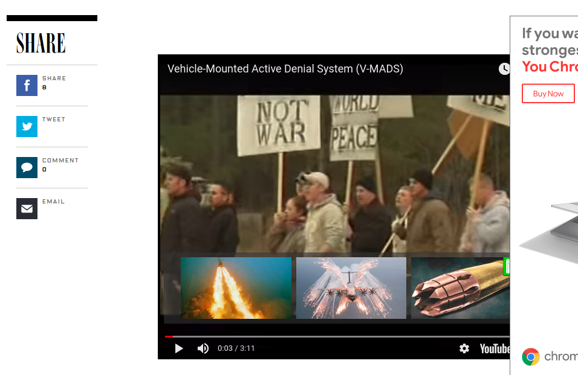

20. Each time I visit a certain area, I get the message "Call Lost" or I can't make or receive calls on my cell phone. I suspect that someone is using a cell phone jammer, but how can I tell for sure?
Losing a signal does not necessarily mean that someone nearby is using a cell phone jammer. In fact, signal loss can be caused by many factors, such as signal blockage by buildings or natural obstructions, unusually heavy call volume in the area, being too far from a cell tower, or being outside of a service provider’s coverage or roaming area. Cell phone users are encouraged to contact their service provider to ensure that coverage is available. If there are no service disruptions and there is interference to authorized communications, the FCC's Enforcement Bureau may use specialized equipment to identify the specific location of a jammer. fcc doc
emp -- EMP interference is generally disruptive or damaging to electronic equipment, and at higher energy levels a powerful EMP event such as a lightning strike can damage physical objects such as buildings and aircraft structures.
other examples of citizens using emp blasts? used to occur in GMC cars
body signal jamming
examples of tech pro protest?